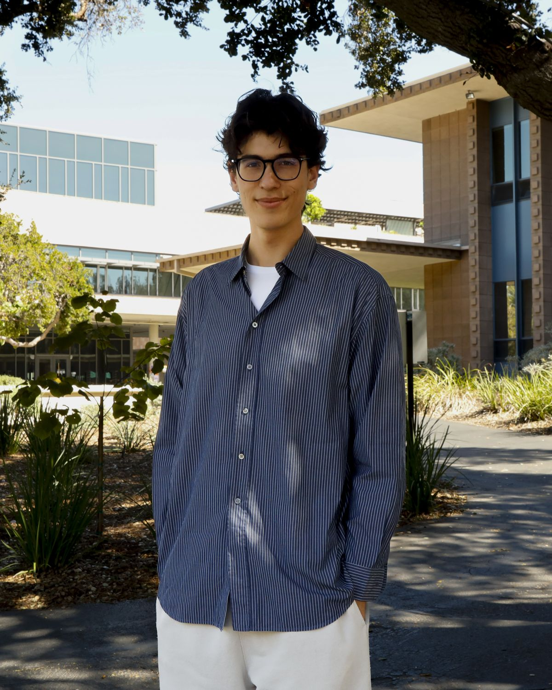

Rodrigo Penide Lema
B.S. Engineering, Harvey Mudd College
B.A. Art History, Pomona College
Class of 2028
I study how things are made, and why they matter.
Most of my work happens where those two questions meet: in a vacuum chamber, in an archive of interviews, in a map of the materials that grow and are made around Los Angeles.
Languages
Spanish, Galician and Portuguese, natively. English and French.
Honours
Randal Lewis Fellow in Innovation and Entrepreneurship. Emerging Leader Award, Harvey Mudd, 2025 and 2026.
